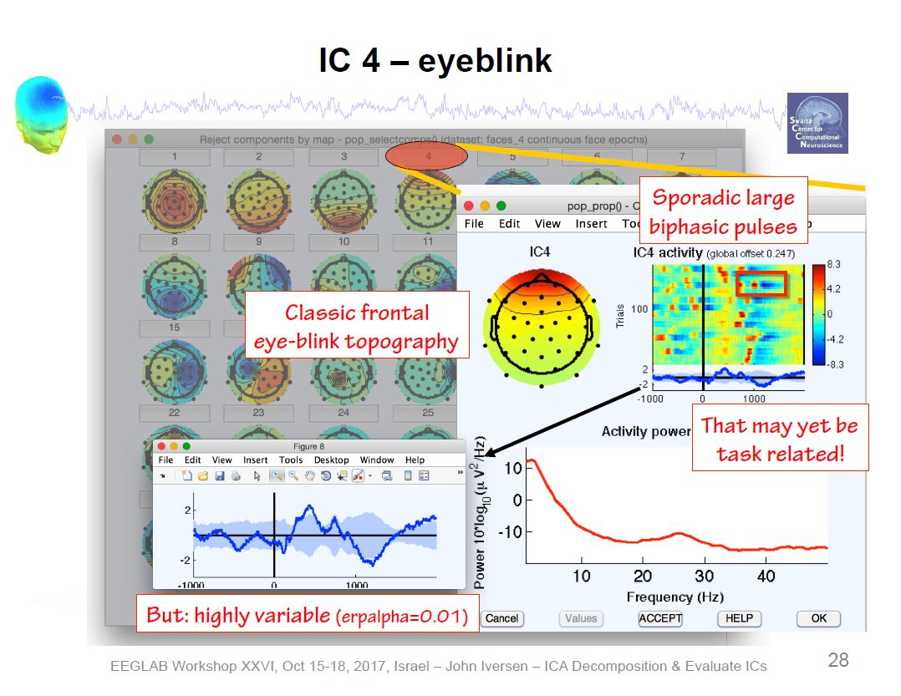
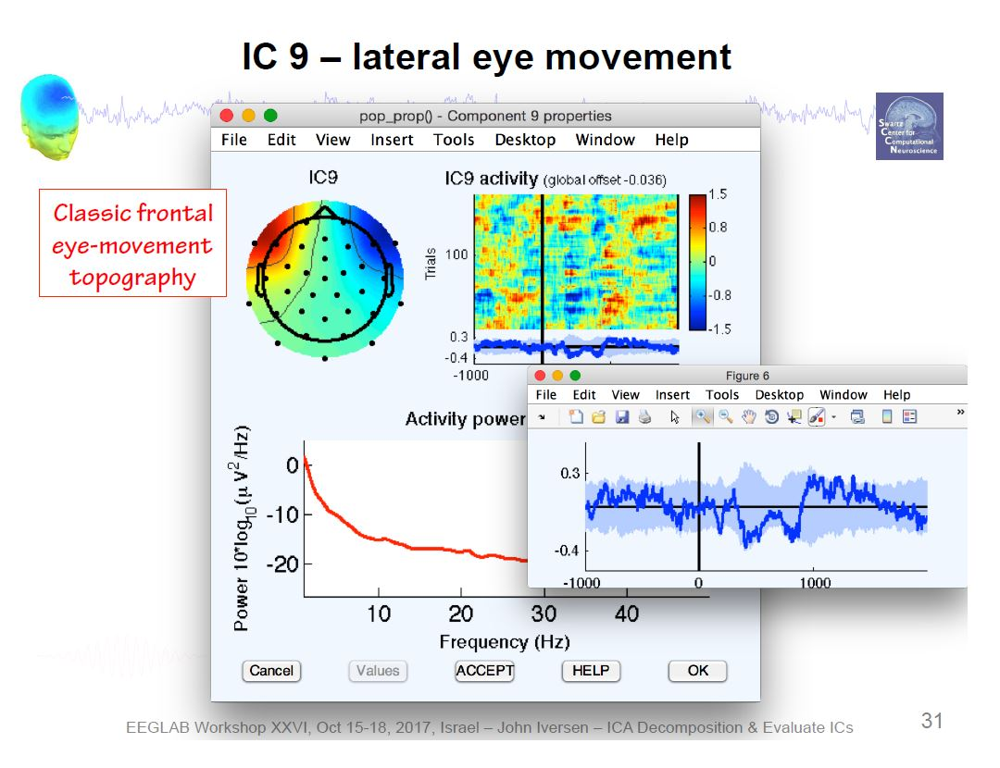
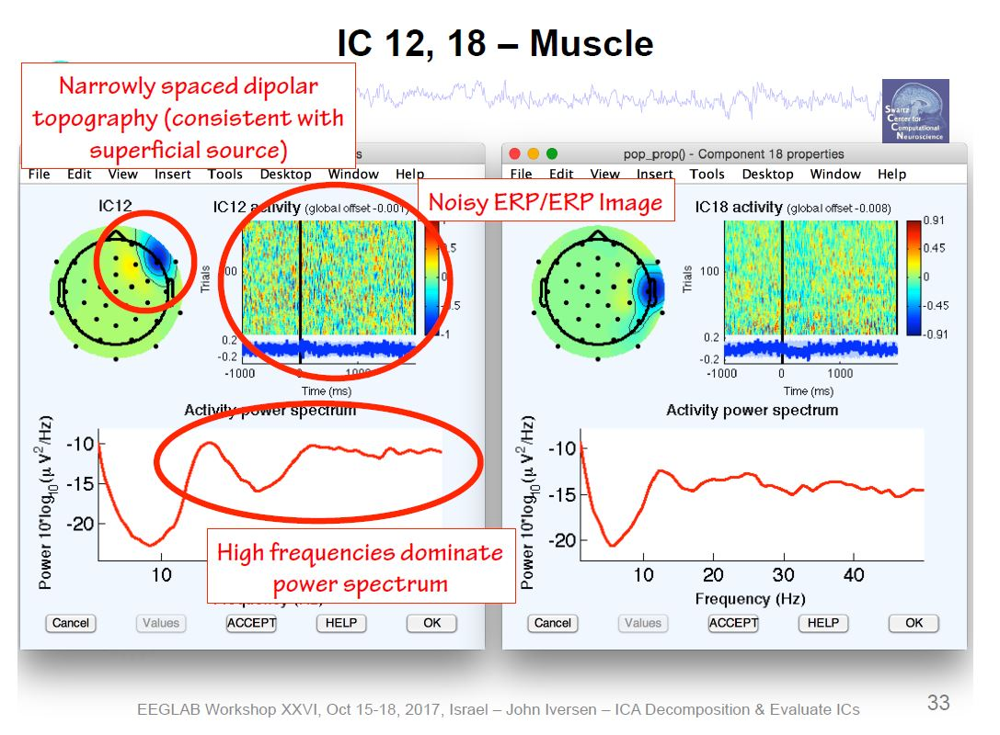
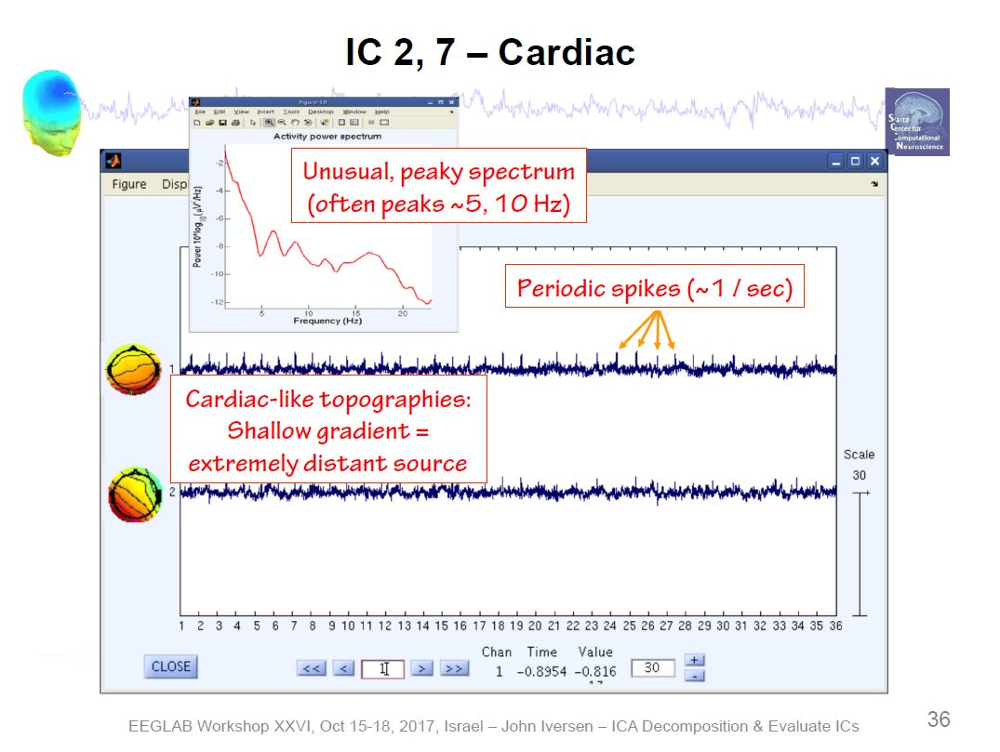
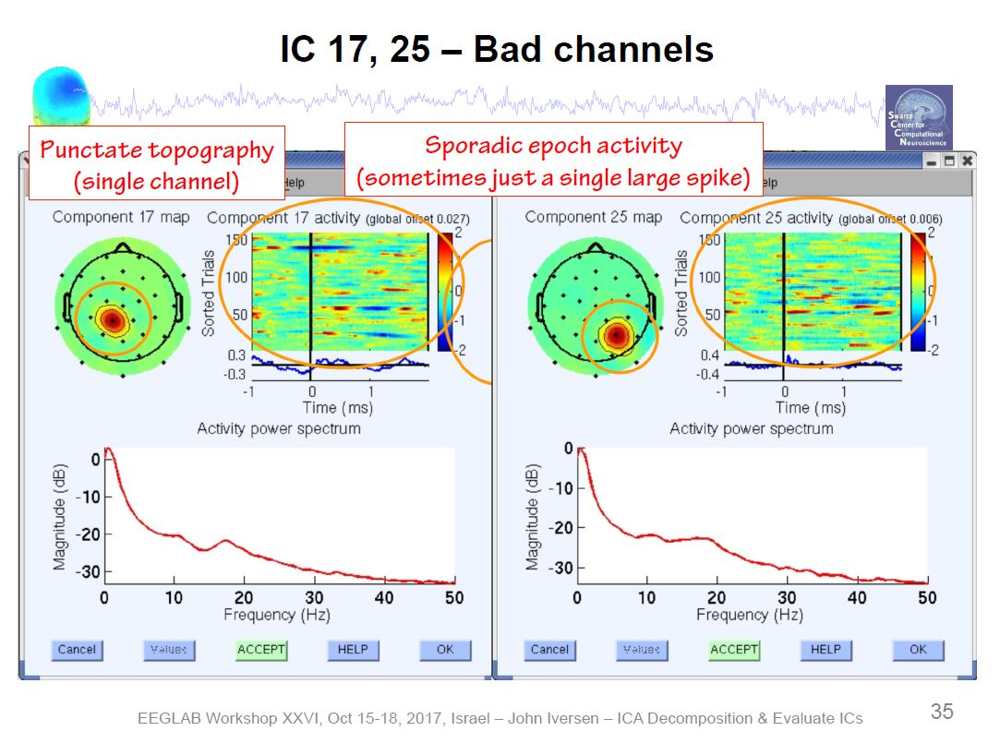
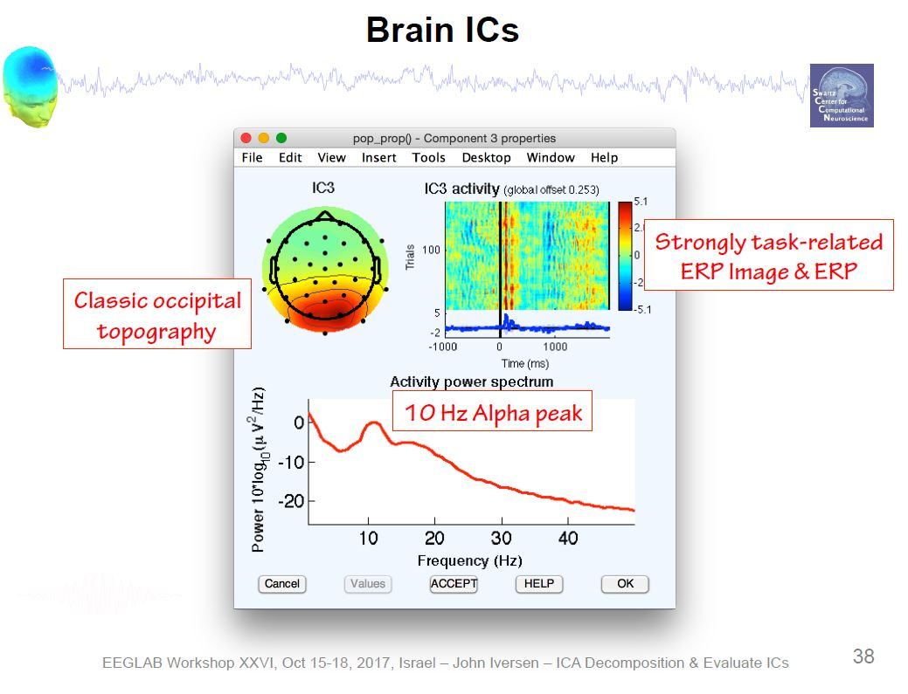
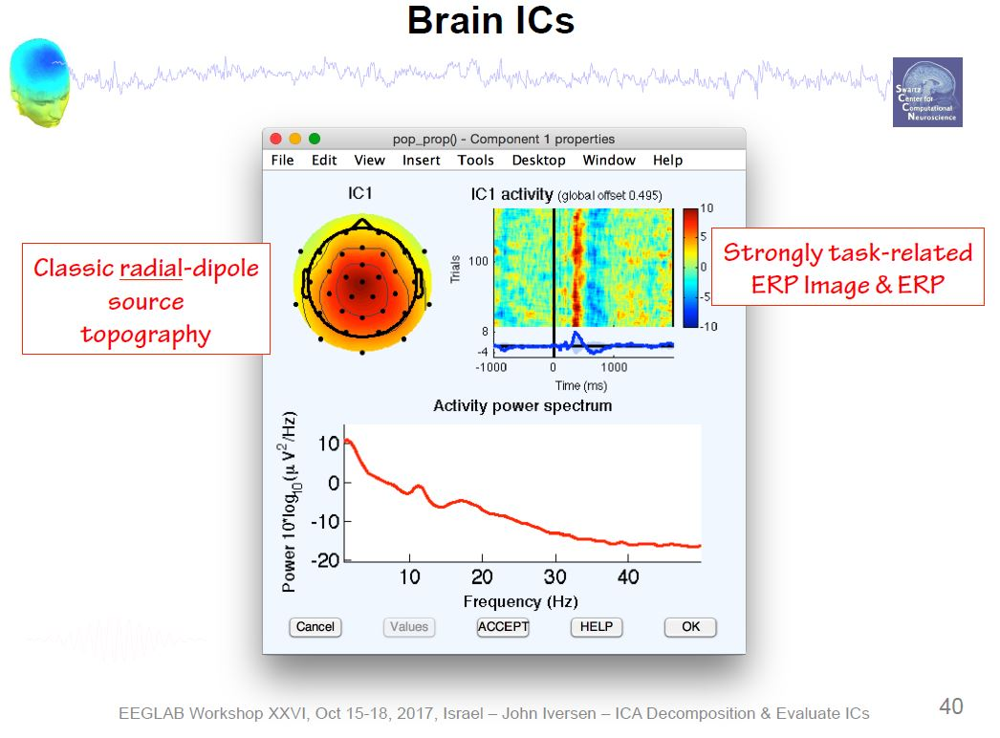
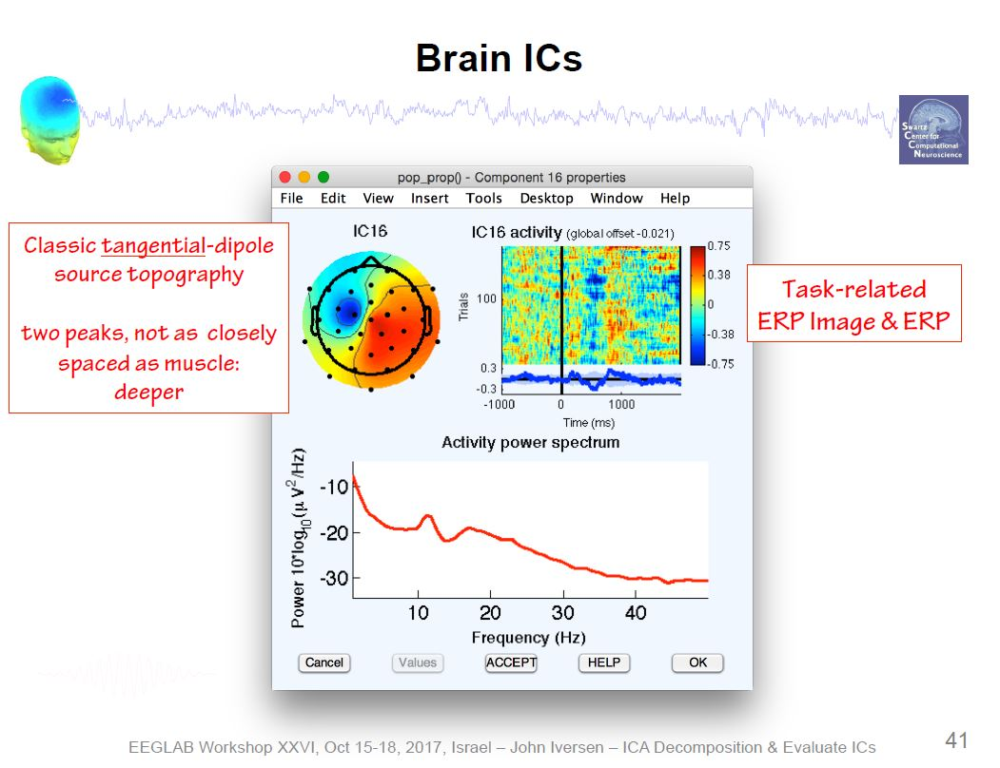
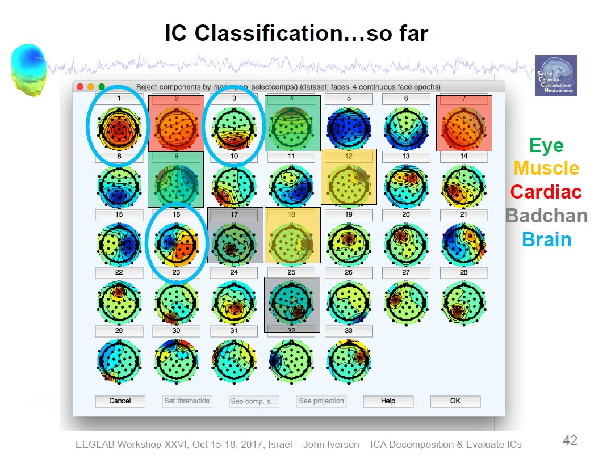
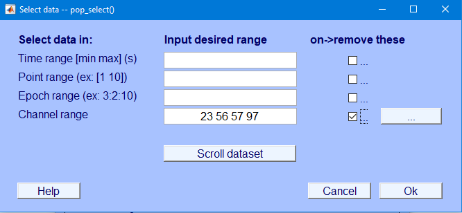

EEGLAB
Install Plugins
MFFMatlabIO plugin
Import Data
File → Import Data → Using EEGLAB functions and plugins → Import
Magstim/EGI .mff file
EEG = pop_mffimport({'\\\\iowa.uiowa.edu\\Shared\\ResearchData\\rdss_itpetersen\\Lab\\Studies\\School Readiness Study\\Data\\LV2\\ERP\\Oddball\\0-Raw Data (mff)\\1613_90_oddball.mff'},{'code'},0,0);
[ALLEEG EEG CURRENTSET] = pop_newset(ALLEEG, EEG, 1,'overwrite','on','gui','off');
Select .mff file(s)
Event type field (may select multiple): code
Filter Data
Filter → Basic FIR Filter
0.1 – 30 Hz
save as new name
EEG = pop_eegfiltnew(EEG, 'locutoff',0.1,'hicutoff',30,'plotfreqz',1);
Average
Referencing
Tools → Re-reference the data → Compute average reference
EEG = eeg_checkset( EEG );
EEG = pop_reref( EEG, []);
[ALLEEG EEG CURRENTSET] = pop_newset(ALLEEG, EEG, 1,'setname','1613_90_oddball_fil_ref','overwrite','on','gui','off');
eeglab redraw;
Artifact
Rejection
Automated Artifact
Rejection
Tools → Reject data using Clean Rawdata and ASR
EEG = eeg_checkset( EEG );
EEG = pop_clean_rawdata(EEG, 'FlatlineCriterion',5,'ChannelCriterion',0.8,'LineNoiseCriterion',4,'Highpass','off','BurstCriterion',20,'WindowCriterion',0.25,'BurstRejection','on','Distance','Euclidian','WindowCriterionTolerances',[-Inf 7] );
[ALLEEG EEG CURRENTSET] = pop_newset(ALLEEG, EEG, 1,'gui','off');
eeglab redraw;
Currently, we run into a bug that yields the following error:
Not enough memory, This is not a bug (Error occurred in function asr_process() at line 132)
As a workaround, type the following code in MATLAB to edit the
function:
edit clean_artifacts
Then, change the number in the following line to a larger number
(e.g., 256) and click save:
{'max_mem','MaxMem'}, 256, ...
Selection of Bad
Channels
View data to identify bad channels to reject.
Edit → Select data
Specify channels to reject
Specify “on -> remove these”
EEG = eeg_checkset( EEG );
EEG = pop_select( EEG, 'nochannel',{'E44','E56','E57','E113'});
[ALLEEG EEG CURRENTSET] = pop_newset(ALLEEG, EEG, 1,'setname','1613_90_oddball_fil_ref_chn','overwrite','on','gui','off');
eeglab redraw;
Selection of Bad
Time Periods
Plot → Channel data (scroll)
Change voltage scale to 50
Settings → Time range to display
Change to 10 seconds
Settings → Number of channels to display
Change to number of channels to view at one time (e.g., 64)
To erase a selected portion of the data, first drag the mouse
(holding down the left mouse button) horizontally across the time region
of interest to mark it for rejection. To deselect a portion of the data,
simply click on the selected region.
After marking some portions of the data for rejection, press REJECT
and a new data set will be created with the rejected data omitted. A new
dataset will be created with the marked regions removed. Your goal is to
reject non-stereotypic artifacts. Do not reject blinks/saccades, because
independent component analysis will remove those.
Clicking “Stack” stacks all electrodes on top of each other to more
easily identify noisy data.
Click “REJECT” to remove the bad time periods from the data file.
Independent
Component Analysis
https://eeglab.org/tutorials/06_RejectArtifacts/RunICA.html
https://socialsci.libretexts.org/Bookshelves/Psychology/Book%3A_Applied_Event-Related_Potential_Data_Analysis_(Luck)/14%3A_Appendix_3%3A_Example_Processing_Pipeline
The component order returned by runica.m is in
decreasing order of the EEG variance accounted for by each
component.
Tools → Decompose data by ICA
EEG = eeg_checkset( EEG );
EEG = pop_runica(EEG, 'icatype', 'runica', 'extended',1,'interrupt','on');
[ALLEEG EEG] = eeg_store(ALLEEG, EEG, CURRENTSET);
eeglab redraw;
Plot → Component maps → 2D
Visually identify independent components to remove
Tools → Inspect/label components by map
Example ICA Artifact Components

   
Example ICA Brain Components   
Overview of ICA Components 
Toggle the “Accept” button to reject an independent component, press
“OK” to specify it for rejection
Automated detection of artifactual ICA components:
https://eeglab.org/tutorials/06_RejectArtifacts/RunICA.html#automated-detection-of-artifactual-ica-components
EEG = eeg_checkset( EEG );
EEG = pop_iclabel(EEG, 'default');
[ALLEEG EEG] = eeg_store(ALLEEG, EEG, CURRENTSET);
EEG = eeg_checkset( EEG );
EEG = pop_icflag(EEG, [NaN NaN;0.9 1;0.9 1;NaN NaN;NaN NaN;NaN NaN;NaN NaN]);
[ALLEEG EEG] = eeg_store(ALLEEG, EEG, CURRENTSET);
eeglab redraw;
There are six categories of components: Brain, Muscle, Eye, Heart,
Line Noise, Channel Noise, and Other
Our goal is to keep the brain components and to remove everything
else (i.e., artifacts).
Tools → Classify components using ICLabel → Label components
Tools → Classify components using ICLabel → Flag components as
artifacts
Substracting rejected ICA components:
https://eeglab.org/tutorials/06_RejectArtifacts/RunICA.html#subtracting-ica-components-from-data
Tools → Remove components
EEG = pop_subcomp( EEG, [1 2 6 7 10 13 21 24 26 31 32 33 36 43 44 51 54 55 59 61 67 68 74 83 90 91 93 99 103 112 113 116 118 121], 0);
[ALLEEG EEG CURRENTSET] = pop_newset(ALLEEG, EEG, 6,'gui','off');
eeglab redraw;
Interpolate Bad
Channels
https://sccn.ucsd.edu/pipermail/eeglablist/2016/011199.html
To interpolate channels you would load up one file that has only the
good channels, then load up a second file that has the full channel
list, and then run the channel interpolation function from the eeglab
gui.
Tools → Interpolate Electrodes → Use all channels (or specific
channels?) of other dataset
Using all channels of other dataset:
EEG = eeg_checkset( EEG );
EEG = pop_interp(EEG, ALLEEG(3).chanlocs, 'spherical');
[ALLEEG EEG CURRENTSET] = pop_newset(ALLEEG, EEG, 4,'gui','off');
eeglab redraw;
Using specific channels of other dataset:
EEG = eeg_checkset( EEG );
EEG = pop_interp(EEG, ALLEEG(3).chanlocs([44 56 57 113]), 'spherical');
[ALLEEG EEG CURRENTSET] = pop_newset(ALLEEG, EEG, 1,'gui','off');
eeglab redraw;
Removed channels:
EEG = eeg_checkset( EEG );
EEG = pop_interp(EEG, EEG.chaninfo.nodatchans([44 56 57 113]), 'spherical');
[ALLEEG EEG CURRENTSET] = pop_newset(ALLEEG, EEG, 3,'gui','off');
EEG = eeg_checkset( EEG );
eeglab redraw;
Data channels:
EEG = eeg_checkset( EEG );
EEG = pop_interp(EEG, [44 56 57 113], 'spherical');
[ALLEEG EEG CURRENTSET] = pop_newset(ALLEEG, EEG, 1,'gui','off');
eeglab redraw;
Segmentation
Tools → Extract Epochs
EEG = eeg_checkset( EEG );
EEG = pop_epoch( EEG, { 'frq+' 'tgt+' }, [-0.2 1], 'newname', '1613_90_oddball_fil_ref epochs', 'epochinfo', 'yes');
[ALLEEG EEG CURRENTSET] = pop_newset(ALLEEG, EEG, 1,'overwrite','on','gui','off');
Baseline
Correction
EEG = eeg_checkset( EEG );
EEG = pop_rmbase( EEG, [-200 0] ,[]);
[ALLEEG EEG CURRENTSET] = pop_newset(ALLEEG, EEG, 1,'overwrite','on','gui','off');
eeglab redraw;
Automatic Script
example
% Starting EEG Lab
[ALLEEG EEG CURRENTSET ALLCOM] = eeglab;
%% Helpful documentation is located here
% https://eeglab.org/tutorials/11_Scripting/Using_EEGLAB_history.html
% https://eeglab.org/tutorials/ConceptsGuide/Data_Structures.html
%Loading in the Dataset
EEG = pop_mffimport({'R:\\Lab\\Studies\\School Readiness Study\\Data\\LV2\\ERP\\Oddball\\0-Raw Data (mff)\\1613_90_oddball.mff'},{'code'},0,0);
EEG.setname='raw';
EEG = eeg_checkset( EEG );
%Storing the current dataset
[ALLEEG, EEG] = eeg_store( ALLEEG, EEG, 1);
% refreshing the graphical interface
eeglab redraw;
%Filter the data
EEG = pop_eegfiltnew(ALLEEG(1), 'locutoff',0.1,'hicutoff',30,'plotfreqz',1);
%Save the Filtered dataset
%ALLEEG EEG CURRENTSET seems to just be a name for all of the current data
%sets
%pop_newset seems to save the dataset in both memory and in the toolkit
[ALLEEG, EEG, CURRENTSET] = pop_newset(ALLEEG, EEG, 2,'setname','fil','savenew','R:\\Lab\\Studies\\School Readiness Study\\Data\\LV2\\ERP\\Oddball\\MATLAB\\1-Filtering (fil)\\tcid_wave.set','gui','off');
eeglab redraw;
% Average referencing
%EEG = eeg_checkset( EEG );
EEG = pop_reref( ALLEEG(2), []);
[ALLEEG EEG CURRENTSET] = pop_newset(ALLEEG, EEG, 3,'setname','Avg Ref','savenew','R:\\Lab\\Studies\\School Readiness Study\\Data\\LV2\\ERP\\Oddball\\MATLAB\\9-Average Reference (ref)\\tcid_wave_avg.set','gui','off');
eeglab redraw;
% Rejecting the artifacts
% testing bumping the
EEG = pop_clean_rawdata(ALLEEG(3), 'FlatlineCriterion',5,'ChannelCriterion',0.8,'LineNoiseCriterion',4,'Highpass','off','BurstCriterion',30,'WindowCriterion',0.25,'BurstRejection','on','Distance','Euclidian','WindowCriterionTolerances',[-Inf 7] );
%Saving cleaned dataset
[ALLEEG EEG CURRENTSET] = pop_newset(ALLEEG, EEG, 4,'setname','clean data','savenew','R:\\Lab\\Studies\\School Readiness Study\\Data\\LV2\\ERP\\Oddball\\MATLAB\\10-Clean Artificats (clean)\\tcid_wave_clean.set','gui','off');
eeglab redraw;
% Placeholder to manually remove bad channels
% ICA components
EEG = pop_runica(ALLEEG(4), 'icatype', 'runica', 'extended', 1,'interrupt','on');
[ALLEEG EEG CURRENTSET] = pop_newset(ALLEEG, EEG, 5,'setname','ICA test','savenew','R:\\Lab\\Studies\\School Readiness Study\\Data\\LV2\\ERP\\Oddball\\MATLAB\\11-ICA\\tcid_wave_ICA.set','gui','off');
eeglab redraw;
%Manually reject ICA components
EEG = pop_subcomp( EEG, [1 2 6 7 10 13 21 24 26 31 32 33 36 43 44 51 54 55 59 61 67 68 74 83 90 91 93 99 103 112 113 116 118 121], 0);
[ALLEEG EEG CURRENTSET] = pop_newset(ALLEEG, EEG, 6,'gui','off');
eeglab redraw;
% Place holder to remind to manually remove the channels that we would
% like to reject
% taking the EEG channel lock of the first (raw) dataset
EEG = eeg_checkset( EEG );
EEG = pop_interp(ALLEEG(5), ALLEEG(1).chanlocs, 'spherical');
[ALLEEG EEG CURRENTSET] = pop_newset(ALLEEG, EEG, 6,'setname','Interpolated','savenew','R:\\Lab\\Studies\\School Readiness Study\\Data\\LV2\\ERP\\Oddball\\MATLAB\\12-Interpolate\\tcid_wave_Interpolate.set','gui','off');
eeglab redraw;
% Segmenting the Data
EEG = eeg_checkset( EEG );
EEG = pop_epoch( ALLEEG(6), { 'frq+' 'tgt+' }, [-0.2 1], 'newname', 'tcid_wave_segmented', 'epochinfo', 'yes');
[ALLEEG EEG CURRENTSET] = pop_newset(ALLEEG, EEG, 7,'setname','Segmented','savenew','R:\\Lab\\Studies\\School Readiness Study\\Data\\LV2\\ERP\\Oddball\\MATLAB\\13-Segment\\tcid_wave_Segment.set','gui','off');
eeglab redraw;
% Baseline Correcting the Data
EEG = eeg_checkset( EEG );
EEG = pop_rmbase( ALLEEG(7), [-200 0] ,[]);
[ALLEEG EEG CURRENTSET] = pop_newset(ALLEEG, EEG, 8,'setname','Baseline Correct','savenew','R:\\Lab\\Studies\\School Readiness Study\\Data\\LV2\\ERP\\Oddball\\MATLAB\\14-Baseline-Correct\\tcid_wave_baseline-correct.set','gui','off');
eeglab redraw;
Automatic script that
loops files
Warning messages with
script
Warning messages appeared when using the automatic cleaning of data.
We may have to send a dataset to someone so they can check on it. Some
documentation is found here:
Filterning, average
referencing, and automatically cleaning the data.
This script batch reads in files, filters them, average references,
and automatically cleans them. After that, this script reads in the
cleaned files for manually processing to remove bad time periods and bad
channels
%10/20/22 Working script that reads everything into matlab
%%%%%%%%%%%%%%%%%%%%%%%%%%%%%%%%%%%%%%%%%%%%%%%%%%%%%%%%%%%%%%%%%%%%%%%%%
%Location of Raw oddball files
rawOddballFiles = '\\iowa.uiowa.edu\Shared\ResearchData\rdss_itpetersen\Lab\Studies\School Readiness Study\Data\LV2\ERP\Oddball\MATLAB\0-Raw\';
%Location of path to save cleaned files
cleanAutoPath = '\\iowa.uiowa.edu\Shared\ResearchData\rdss_itpetersen\Lab\Studies\School Readiness Study\Data\LV2\ERP\Oddball\MATLAB\10-Clean Artificats (clean)\';
%all oddball files in the directory to be processed
filesInDirectory = dir(fullfile(rawOddballFiles, '*.mff')); %Reading the files in the directory
%Listing the number of subjects for the number of times to loop
numberOfSubject = height(filesInDirectory);
%Names of all the files in the directory
listOfSubjects={filesInDirectory.name};
%splitting the filename up
filenameSplit = regexp(listOfSubjects, '_', 'split');
id = cellfun(@(x) x{1},filenameSplit,'un',0); %getting the id's
wave = cellfun(@(x) x{2},filenameSplit,'un',0); %getting the waves
[ALLEEG EEG CURRENTSET ALLCOM] = eeglab;
for i=1:numberOfSubject
%%%% Importing Data
path = [rawOddballFiles,filesInDirectory(i).name];
tcid = char(strcat(id(i),'_', wave(i))); %combining the TCID and wave
EEG = pop_mffimport({path},{'code'},0,0);
% Saving the data in memory
[ALLEEG EEG CURRENTSET] = pop_newset(ALLEEG, EEG, i,'setname', tcid,'gui','off');
% Filtering the data
EEG = pop_eegfiltnew(ALLEEG(i), 'locutoff',0.1,'hicutoff',30,'plotfreqz',1);
[ALLEEG EEG CURRENTSET] = pop_newset(ALLEEG, EEG, i,'overwrite','on','gui','off');
% Average Referencing
EEG = pop_reref( ALLEEG(i), []);
[ALLEEG EEG CURRENTSET] = pop_newset(ALLEEG, EEG, i,'overwrite','on','gui','off');
% They strongly advise importing channel locations before using this
% function.
%Cleaning the Data
EEG = pop_clean_rawdata(ALLEEG(i), 'FlatlineCriterion',5,'ChannelCriterion',0.8,'LineNoiseCriterion',4,'Highpass','off','BurstCriterion',30,'WindowCriterion',0.25,'BurstRejection','on','Distance','Euclidian','WindowCriterionTolerances',[-Inf 7]);
nameClean = [tcid,'_autoClean.set'];
savePathClean = [cleanAutoPath,nameClean];
[ALLEEG EEG CURRENTSET] = pop_newset(ALLEEG, EEG, i,'setname', nameClean, 'savenew', savePathClean, 'gui','off', 'overwrite', 'on');
end
eeglab redraw:
%% Reading in automatically cleaned datasets
%%%%%%%%%%%%%%
% Clear Data becasue to overwrite anything in memory
%%%%%%%%%%%%%%
ALLEEG = [];
EEG = [];
% Adding the path for cleaned files
cleanAutoPath = '\\iowa.uiowa.edu\Shared\ResearchData\rdss_itpetersen\Lab\Studies\School Readiness Study\Data\LV2\ERP\Oddball\MATLAB\10-Clean Artificats (clean)\';
%Starting EEGLAB
[ALLEEG EEG CURRENTSET ALLCOM] = eeglab;
%Location of cleaned oddball data
filesInDirectoryClean = dir(fullfile(cleanAutoPath, '*.set')); %Reading the files in the directory
%Listing the number of subjects for the number of times to loop
numberOfSubjectClean = height(filesInDirectoryClean);
%Names of all the files in the directory
listOfSubjectsClean = {filesInDirectoryClean.name};
%splitting the filename up
filenameSplitClean = regexp(listOfSubjectsClean, '_', 'split');
id = cellfun(@(x) x{1},filenameSplitClean,'un',0); %getting the id's
wave = cellfun(@(x) x{2},filenameSplitClean,'un',0); %getting the waves
for i=1:numberOfSubjectClean
%%%% Importing Data
tcidClean = char(strcat(id(i),'_', wave(i), '_autoClean.set')); %combining the TCID and wave to name the file
EEG = pop_loadset('filename', tcidClean, 'filepath', cleanAutoPath);
[ALLEEG EEG CURRENTSET] = pop_newset(ALLEEG, EEG, i,'setname', tcidClean,'gui','off');
end
eeglab redraw;
Removing bad time
periods and channels
- In the now open EEGLAB interface, select a dataset. Go to
Tools > Inspect/reject data by eye
- Go through the raw signal and manually reject bad time periods
- Select
REJECT and overwrite the file in memory
- select
Overwrite it in memory (set=yes; unset=create a new dataset)
- Visually inspect the data and select any bad channels, and write
them down
- Next, manually reject the channels by selecting
Edit
then Select Data
- Manually enter the channels to be removed in the
Channel range field and select the checkbox under
on->remove these and select Ok
- Save the file as
tcid_wave_manualClean.set in the
following drive path
\\iowa.uiowa.edu\Shared\ResearchData\rdss_itpetersen\Lab\Studies\School Readiness Study\Data\LV2\ERP\Oddball\MATLAB\11-Manually Cleaned- This screenshot represents removing channels
23 56 57 97 
- Repeat step for each cleaned dataset
Running the ICA
This script runs the ICA. We’ll want to think about how to
automatically reject the components here. Once this runs, see the ICA section to reject components. Tools → Inspect/label
components by map is how to reject components.
% Running the ICA
%% Reading in the manually cleaned datasets
%%%%%%%%%%%%%%
% Clear Data becasue to overwrite anything in memory
%%%%%%%%%%%%%%
ALLEEG = [];
EEG = [];
% Adding the path for cleaned files
manualCleanPath = '\\iowa.uiowa.edu\Shared\ResearchData\rdss_itpetersen\Lab\Studies\School Readiness Study\Data\LV2\ERP\Oddball\MATLAB\11-Manually Cleaned\';
%Starting EEGLAB
[ALLEEG EEG CURRENTSET ALLCOM] = eeglab;
%Location of cleaned oddball data
filesInDirectoryManualClean = dir(fullfile(manualCleanPath, '*.set')); %Reading the files in the directory
%Listing the number of subjects for the number of times to loop
numberOfSubjectManualClean = height(filesInDirectoryManualClean);
%Names of all the files in the directory
listOfSubjectsManualClean = {filesInDirectoryManualClean.name};
%splitting the filename up
filenameSplitManualClean = regexp(listOfSubjectsManualClean, '_', 'split');
id = cellfun(@(x) x{1},filenameSplitManualClean,'un',0); %getting the id's
wave = cellfun(@(x) x{2},filenameSplitManualClean,'un',0); %getting the waves
for i=1:numberOfSubjectManualClean
%%%% Importing Data
tcidClean = char(strcat(id(i),'_', wave(i), '_manualClean.set')); %combining the TCID and wave to name the file
EEG = pop_loadset('filename', tcidClean, 'filepath', manualCleanPath);
[ALLEEG EEG CURRENTSET] = pop_newset(ALLEEG, EEG, i,'setname', tcidClean,'gui','off');
%%% Running the ICA
EEG = eeg_checkset( EEG );
EEG = pop_runica(EEG, 'icatype', 'runica', 'extended',1,'interrupt','on');
[ALLEEG EEG] = eeg_store(ALLEEG, EEG, CURRENTSET);
eeglab redraw;
end
eeglab redraw;
